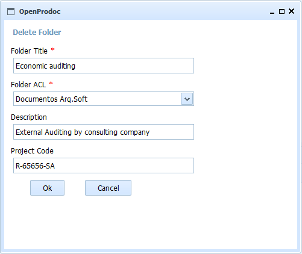

When select the option "Delete Fold" it will be displayed this form showing all the information related to the folder; this allows to review that is the correct folder to be deleted.
A folder can't be deleted if the user doesn't have enough privileges on the element or on any of the contained elements.

If you accept to delete the folder, the folder itself and all the folders contained will be deleted. The documents will be moved to the OpenProdoc Paperbin, so you can recover them or delete permanently.